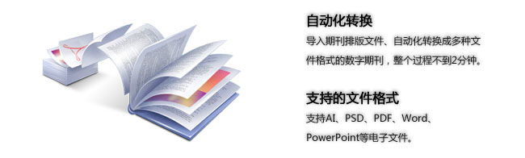

电子杂志制作软件
通过使用在线电子杂志制作软件能够快速制作高质量的清晰原版电子杂志，将制作好的电子杂志发布到互联网或移动网络中进行阅读。
多种期刊排版文件自动化转换

支持的阅读终端
PC(已发布)、iPad(已发布)、iPhone(即将发布)、Andriod(内测中)、微软智能手机(内测中)
- PC在线阅读：在浏览器中无需安装任何软件即可进行原版阅读。
- iPad下载阅读：在iPad中安装瑞读客户端或由我们专门为您定制的阅读客户端中进行下载阅读。
多渠道发布
- 发布到互联网：制作完成的电子杂志能够发布到瑞读网或用户自己的网站中进行使用。
- 发布到移动网络：制作完成的电子杂志能够发布到多个平台的应用商店。
如何使用电子杂志制作软件？
直接登录进入瑞读电子杂志制作中心（网址http://share.ieread.com/）。